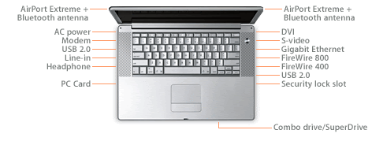

The PowerBook G4 is a series of notebook computers manufactured, marketed, and sold by Apple Computer, Inc. between 2001 and 2006 as part of its PowerBook line of notebooks. The PowerBook G4 runs on the RISC-based PowerPC G4 processor, designed by the AIM (Apple/IBM/Motorola) development alliance and initially produced by Motorola. It was built later by Freescale, after Motorola spun off its semiconductor business under that name in 2004. The PowerBook G4 has two different designs: one enclosed in a titanium body with a translucent black keyboard and a 15-inch screen; and another in an aluminium body with an aluminum-colored keyboard, in 12-inch, 15-inch, and 17-inch sizes.
Between 2001 and 2003, Apple produced the titanium PowerBook G4; between 2003 and 2006, the aluminium models were produced. Both models were hailed for their modern design, long battery life, and processing power. When the aluminium PowerBook G4s were first released in January 2003, 12-inch and 17-inch models were introduced first, while the 15-inch model retained the titanium body until September 2003, when a new aluminium 15-inch PowerBook was released. The aluminium 15-inch model also includes a FireWire 800 port, which had been included with the 17-inch model since its debut nine months earlier.
The PowerBook G4 is the last generation of the PowerBook series, and was succeeded by the Intel-powered MacBook Pro line in the first half of 2006. The latest version of OS X that any PowerBook G4 can run is Mac OS X Leopard, released in 2007. When Apple switched to Intel x86 processors in 2006, the PowerBook G4's form and aluminium chassis were retained for the MacBook Pro.
The initial design of the PowerBook G4 was developed by Apple hardware designer Jory Bell, Nick Merz and Danny Deluis. The ODM Quanta also helped in the design. The new machine was a sharp departure from the black plastic, curvilinear PowerBook G3 models that preceded it. The orientation of the Apple logo on the computer’s lid was switched sot that it would “read” correctly o onlookers when the computer was in use. PowerBook G3 and prior models presented it right-side-up from the perspective of the computer’s owner when the lid was closed.
Apple’s industrial design team, headed by British designer Jonathan Ive, converged around a minimalist aesthetic – the Titanium G4’s design language laid the groundwork of the aluminium PowerBook G4, the MacBook Pro, the PowerMac G5, the flat-screen iMac. The Xserve and the Mac mini.
The hinges on the titanium display are notorious for breaking under typical use. Usually the hinge (which is shaped like an L) will break just to the left of where it attaches to the lower case on the right hinge and just to the right on the hinge (where the right hinge is on the right side of the computer when the optical drive is facing the user). When the 667 MHz and 800 MHz “DVI” PowerBook was introduced Apple changed the hinge design slightly to strengthen it. At least one aftermarket manufacturer began producing sturdier replacement hinges to address this problem, though actually performing the repair as the bezel is glued together. In addition some discolouration, bubbling or peeling of paint on the outer bezel occurred, notably around the area where the palm would rest while using the trackpad, and around the rear of the hinges where paint on the black of the machine was often worn off. This appeared on early models but not on later Titanium PowerBooks.
The video cable is routed around the left-side hinge. This will cause the cable to weaken under heavy usage. Many owners have reported display problems such as random lines or a jumbled screen although few have replaced just the video cable to successfully resolve this problem. There is also a backlight cable that might fall; one option to replace either or both cables before replace either or both cables before replacing LCDs.
‘Source – website like wikipidea, macworld, macspecs, etc’